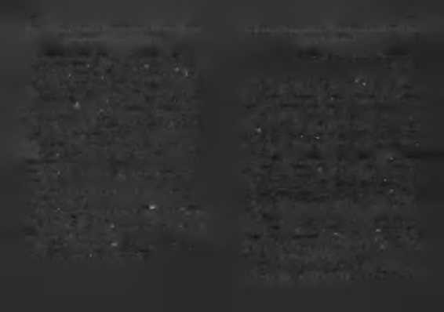

Kendi değişiminizi hafife almayın. Bir insan değişince, etki
Ve karşındakine değer verdiğin kadar insansın.
sinin nerede biteceği bilinemeyecek bir süreç başlar. Belki bir aile
Bir gün yalan söyleyeceksen eğer;
değişir, belki bir şehir, belki bir ülke.
Bırak karşındaki sana güvendiği kadar inansın.
İnsan tıpkı yüksek atlamacılar gibi, atmalı kendini yapamayaca
Ay ışığındadır sevgiliye duyulan hasret,
ğını sandıklarının ötesine. Belirli aralıklarla daha önce yapama
Ve sevgiline hasret kaldığın kadar ona yakınsın.
yacağını düşündüğü bir şey yapmalı. Sınırlarını yiyerek bes
Unutma yağmurun yağdığı kadar ıslaksın,
lemeli cesaretini. Aşmalı kendini, uçmalı limitlerinin ötesine,
Güneşin seni ısıttığı kadar sıcak.
gitmeli gidebildiği kadar...
Kendini yalnız hissettiğin kadar yalnızsın
Her şey sizinle başlar, çok şey sizde biter. Limitiniz sizsi-
Ve güçlü hissettiğin kadar güçlü.
niz.
Kendini güzel hissettiğin kadar güzelsin,
Kendiniz kadar başarılı, kendiniz kadar başarısız olacak
îşte budur hayat!
sınız.
İşte budur yaşamak,
Tıpkı Can Yücel'in şiirinde dediği gibi: Her Şey Sende Gizli!
Bunu hatırladığın kadar yaşarsın
Bunu unuttuğunda aldığın her nefes kadar üşürsün
Yerin seni çektiği kadar ağırsın,
Ve karşındakini unuttuğun kadar çabuk unutulursun
Kanatların çırpındığı kadar hafif.
Çiçek sulandığı kadar güzeldir,
Kalbinin attığı kadar canlısın,
Kuşlar ötebildiği kadar sevimli,
Gözlerinin uzağı gördüğü kadar genç...
Bebek ağladığı kadar bebektir.
Sevdiklerin kadar iyisin,
Ve her şeyi öğrendiğin kadar bilirsin,
Nefret ettiklerin kadar kötü...
sevdiğin kadar sevilirsin...
Ne renk olursa olsun kaşın gözün,
Karşındakinin gördüğüdür rengin.
Başarı her gün kendini yenebilmeyi gerektirir. Her gün yolu
Yaşadıklarını kâr sayma:
nuza, iki seçenekli bir yol ayrımı çıkacak. Birini seçmeniz si
Yaşadığın kadar yakınsın sonuna; ne kadar yaşarsan yaşa,
zi başarıya götürecek, diğeri başarısızlığa.
Sevdiğin kadardır ömrün...
Başarısızlığa götüren yollar daha kolay yürünür olacak.
Gülebildiğin kadar mutlusun.
Her gün kendinizi yenmeli, başarıya götüren yolu seçmelisi
Üzülme, bil ki ağladığın kadar güleceksin
niz. Başarıya götürebilecek ihtimallere (b)akm. Benim okuru
Sakın bitti sanma her şeyi,
ma kitaplara girecek işler başarmak yakışır.
Sevdiğin kadar sevileceksin.
Güneşin doğuşundadır doğanın sana verdiği değer

150